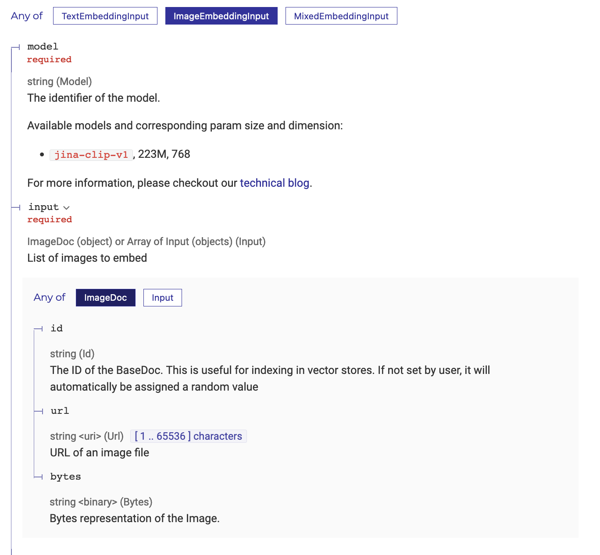

Jina AI released their new multimodal embedding model - jina-clip-v1 this week. It’s under an Apache 2.0 license and it can be downloaded/used via HuggingFace. You can find out more details about the model from their blog and the technical report.
At the same time, I’m co-organising the Build Together Hackathon @ Singapore this weekend, and Ivan who was speaking managed to get the hackathon participants access to LanceDB Cloud, which I understand to be under technical preview. I last tried LanceDB at a hackathon, and thought trying the two tools would make a fun side quest today.
The objective of this blog post is to provide a simple code introduction and I highlight some of my learnings (e.g. how the embedding API does not automatically resize the image, using pydantic to define the db schema). The code below can certainly be further optimised with the batching of the API calls and data loading.
Step 1: Connecting to LanceDB Cloud
Let’s begin by defining some constants related to LanceDB Cloud - the vector database’s URI and the API key. We can then connect to the database.
import os
import lancedb
# Load API keys from environment variables
LANCEDB_API_KEY = os.getenv("LANCEDB_API_KEY")
LANCEDB_URI = os.getenv("LANCEDB_URI")
# Connect to the database
db = lancedb.connect(
uri=LANCEDB_URI,
api_key=LANCEDB_API_KEY,
region="us-east-1"
)The lancedb.connect line is the main difference between using LanceDB locally and via their cloud managed service - so transitioning between the two is that easy. If you’re using it locally, the URI will be the filepath of your choice, and you won’t need the api_key or region argument.. Also, do note that we’re using LanceDB’s synchronous API throughout this blog.
LOCAL_FILE_PATH = "xxx"
db = lancedb.connect(
uri=LOCAL_FILE_PATH,
)Step 2: Helper functions to get multimodal embeddings
In this example, we’re using Jina AI’s API service. As part of the free trial, you have free credits to process up to 1M tokens.
Let’s go into the code. We begin by loading the API key too.
JINA_API_KEY = os.getenv("JINA_API_KEY")According to the docs, the image sent to the API can either be a URL or bytes. Hence, we write the following helper code below to encode the image to base64.

import base64
from io import BytesIO
# Encode an image to base 64
def image_to_base64(image):
buffered = BytesIO()
image.save(buffered, format="PNG")
return base64.b64encode(buffered.getvalue()).decode('utf-8')What about the size of the image? According to their blog, every 224x224 pixel tile in the image is 1,000 tokens. I didn’t know that initially and assumed that the image would be automatically resized to a suitable size in the backend. I accidentally sent in a ~1MB image, and used almost half of my free credits.
For how tokens are counted for images larger than 224x224, let’s refer to the example from their blog.
For an image with dimensions 750x500 pixels:
- The image is divided into 224x224 pixel tiles.
- To calculate the number of tiles, take the width in pixels and divide by 224, then round up to the nearest integer. 750/224 ≈ 3.35 → 4
- Repeat for the height in pixels: 500/224 ≈ 2.23 → 3
- The total number of tiles required in this example is: 4 (horizontal) x 3 (vertical) = 12 tiles
- The cost will be 12 x 1,000 = 12,000 tokens
Hence, I’ve written a simple helper function to resize the image to the lowest tile resolution the model takes in - which is 224x224
from PIL import Image
# Resize image to 214x214
def resize_image(image_file_path, size=(224, 224)):
""" Resize image to fit within the given size (224, 224) """
with Image.open(image_file_path) as img:
img.thumbnail(size, Image.LANCZOS)
return imgWith these two helper functions, we can now write our main embedding function which does a POST request.
import json
import requests
def get_embeddings(image_file_path):
headers = {
'Content-Type': 'application/json',
'Authorization': f'Bearer {JINA_API_KEY}'
}
resized_image = resize_image(image_file_path)
base64_image = image_to_base64(resized_image)
data = {
'input': [{"bytes": base64_image}],
'model': 'jina-clip-v1',
'encoding_type': 'float'
}
response = requests.post(JINA_ENDPOINT,
headers=headers,
json=data)
results = json.loads(response.text)
return results["data"][0]["embedding"]Step 3: Loading the embeddings into the vector database
What’s nice about LanceDB is that we can use Pydantic to programmatically define how we want to store our data. For the Vector type, we set it to the length 768 and that is the resulting dimensionality of the embedding vectors from jina-clip-v1.
from lancedb.pydantic import Vector, LanceModel
# Create a schema for the table
class Content(LanceModel):
file_id: int
file_name: str
vector: Vector(768)
# Create a table called `demo` based on the above schema
tbl = db.create_table("demo", schema=Content)Step 4: Loading the embeddings into the vector database
Now that we can generate our embeddings and load it into the vector database.
For the code below, assume list_of_files is a list of file paths of the images we want to embed.
# Loop through each file in the list
for index, file_name in enumerate(LIST_OF_FILES):
# Create the embeddings
image_embedding = get_embeddings(file_name)
# Store this as a list of dictionaries to load into the vector database
img_data_to_add = [
{
"file_id": index
"vector": image_embedding,
"file_name": f"{file_name}",
}
]
# Add to the db
tbl.add(img_data_to_add)Full code
# Load packages
import base64
import json
import os
from io import BytesIO
import lancedb
import requests
from lancedb.pydantic import Vector, LanceModel
from PIL import Image
# Load secrets from environment variables
LANCEDB_API_KEY = os.getenv("LANCEDB_API_KEY")
LANCEDB_URI = os.getenv("LANCEDB_URI")
JINA_API_KEY = os.getenv("JINA_API_KEY")
LIST_OF_FILES = ["path/to/file1.png", "path/to/file2.png"] # list of file names
# Encode an image to base 64
def image_to_base64(image):
buffered = BytesIO()
image.save(buffered, format="PNG")
return base64.b64encode(buffered.getvalue()).decode('utf-8')
# Resize image to 214x214
def resize_image(image_file_path, size=(214, 214)):
""" Resize image to fit within the given size (214, 214) """
with Image.open(image_file_path) as img:
img.thumbnail(size, Image.LANCZOS)
return img
# Get embeddings
def get_embeddings(image_file_path):
headers = {
'Content-Type': 'application/json',
'Authorization': f'Bearer {JINA_API_KEY}'
}
resized_image = resize_image(image_file_path)
base64_image = image_to_base64(resized_image)
data = {
'input': [{"bytes": base64_image}],
'model': 'jina-clip-v1',
'encoding_type': 'float'
}
response = requests.post("https://api.jina.ai/v1/embeddings",
headers=headers,
json=data)
results = json.loads(response.text)
return results["data"][0]["embedding"]
# Connect to the database
db = lancedb.connect(
uri=LANCEDB_URI,
api_key=LANCEDB_API_KEY,
region="us-east-1"
)
# Create a schema for the table
class Content(LanceModel):
file_id: int
file_name: str
vector: Vector(768)
# Create a table called `demo` based on the above schema
tbl = db.create_table("demo", schema=Content)
# Loop through list of file names to generate embedding and add to db
for index, file_name in enumerate(LIST_OF_FILES):
# Create the embeddings
image_embedding = get_embeddings(file_name)
# Store this as a list of dictionaries to load into the vector database
img_data_to_add = [
{
"file_id": index,
"vector": image_embedding,
"file_name": f"{file_name}",
}
]
# Add to the db
tbl.add(img_data_to_add)